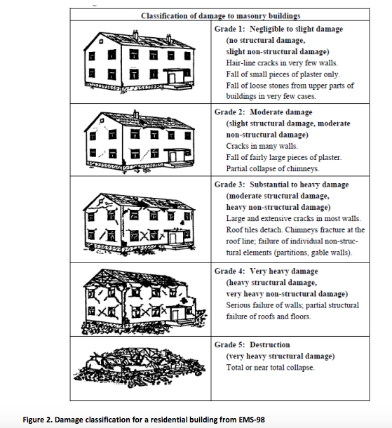

Haiti Earthquake in 2010
Haiti Earthquake in 2010
Facts
Time: 16:53 local time on Tuesday, 12 Jan 2010
Catastrophic magnitude: 7.0 M
Epicenter: town of Leogane, 25 km west of Port-au-Prince, Haiti’s capital
Death toll: 100,000 - 160,000
Building damage
Due to the high magnitude as well as frequent aftershocks, Haiti 2010 earthquake caused huge damage to buildings and landmarks in the region. According to the International Business Times, the earthquake destroyed about “70 percent of the building in the 15 districts of the country’s capital city Port-au-Prince”. Regions that got hit by the earthquake also had poor construction practices and high population density, which worsened the casualty and destruction conditions.
Background
The Government of Haiti, with technical support and facilitation provided by the United Nations (UN), the Inter-American Development Bank (IADB), the World Bank (WB) and the European Commission (EC), led the Post Disaster Needs Assessment (PDNA) in the region and assessed the damage of buildings in the earthquake affected area. It was conducted by comparing pre-earthquake satellite imagery to post-earthquake aerial photos.
Total Number of damaged houses grouped in EMS-98 Damage classes by evaulated communes
What can we read from the graph?
EMS-98 Damage classification diagram

1) Classified by the dominant land use:
a. buildings on the agricultural land are damaged severely since all buildings left were classified in class 4 and class 5.
b. On agricultural, commercial land and in downtown, there were more damaged houses than houses in better condition. On residential land with high and low density and in shanty, the situation was better.
2) Classified by the evaulated communes:
a. In Port-au-Prince, Leogane, Carrefour and Delmas, the building damage condition was severe. This makes sense because those regions are close to the epicenter.
b. In general, buildings had poor construction practice.
Source
http://www.ibtimes.com/haitis-earthquake-destroyed-70-buildings-report-360983
http://eqclearinghouse.org/co/20100112-haiti/wp-content/uploads/2010/02/PDNA_damage_assessment_report_v03-1.pdf
Data
http://unosat-maps.web.cern.ch/unosat-maps/HT/EQ20100114HTI/PDNA_HTI_EQ2010_BuildingDamagePosterA0_v1_HR.pdf